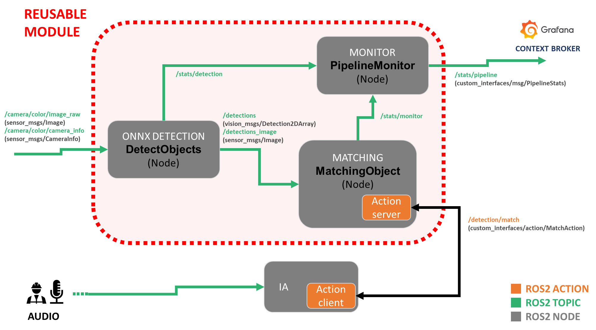
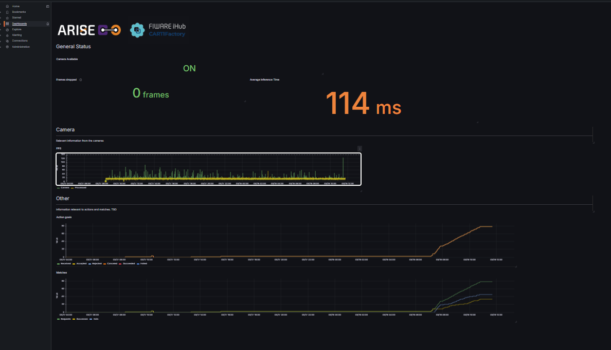

Módulo reutilizable de visión y búsqueda de objetos objetivo
Los módulos forman parte del middleware de ARISE
Importante
¡Acceda al repositorio de GitHub aquí!
Características
Compatibilidad automática con CPU / CUDA
Compatibilidad con segmentación (OBB a partir de la máscara)
Publicación opcional de imágenes anotadas
Publicación de
class_mapcon retención del último mensajeMétricas industriales (FPS, infer_ms, device, etc.)
Modo
class_idconfigurable
Primeros pasos
Este módulo forma parte de un sistema de detección para un asistente de IA. El usuario introduce una solicitud y, mediante procesamiento del lenguaje natural, se identifican la tarea y el objeto al que hace referencia. El objeto pasa a ser la keyword, o el objeto objetivo del módulo.

Dependencias
Todas las dependencias de Python se incluyen en el archivo requirements.txt. Para instalarlas, ejecute en la terminal:
pip install -r /requirements.txt
Este paquete depende de otras interfaces de ROS2:
sudo apt install \
ros-${ROS_DISTRO}-vision-msgs \
ros-${ROS_DISTRO}-cv-bridge
Qué incluye el módulo
Proporcionamos el paquete CARTIFactory, que contiene varios nodos que, en conjunto, permiten probar este módulo reutilizable.
Comparador de palabras clave
El nodo keyword_matcher recibe los resultados del nodo detector. Su finalidad principal es determinar si una clase de objeto solicitada está presente en las detecciones más recientes.
El nodo se suscribe a los resultados de detección más recientes y los almacena internamente. Cuando recibe una solicitud de coincidencia a través del servidor de acciones custom_interfaces/MatchAction, compara la palabra clave solicitada con las etiquetas de las clases detectadas y devuelve únicamente las detecciones que coinciden con ella. La comparación se puede configurar para no distinguir entre mayúsculas y minúsculas, detenerse en la primera coincidencia válida e ignorar las detecciones por debajo de un umbral de confianza configurable.
Además, el nodo supervisa la disponibilidad del flujo de la cámara mediante los mensajes CameraInfo recibidos. Si no recibe información de la cámara durante un tiempo de espera configurable, la marca como no disponible y rechaza los objetivos entrantes de la acción de búsqueda de coincidencias. Así se evita aceptar solicitudes de coincidencia cuando la cadena de percepción no recibe datos en directo.
Detector ONNX
El nodo detector_onnx realiza inferencias de detección y segmentación de objetos en imágenes en ROS2 mediante un modelo ONNX ejecutado con ONNX Runtime. Se suscribe a un tópico de imágenes de cámara, preprocesa cada fotograma para adaptarlo al tamaño de entrada de la red, ejecuta la inferencia, posprocesa las salidas del modelo y publica los resultados como vision_msgs/Detection2DArray.
El nodo también permite publicar opcionalmente una imagen de depuración en la que se dibujan máscaras, cuadros delimitadores, etiquetas y cuadros orientados sobre la imagen original. Publica un tópico con el mapa de clases y retención del último mensaje para que los nodos posteriores puedan convertir los identificadores de clase en etiquetas legibles, a partir de un archivo de configuración TOML o, en su defecto, de identificadores numéricos.
La configuración se puede proporcionar mediante parámetros de ROS2 y complementar opcionalmente con un archivo .toml, que puede definir metadatos como el tipo de modelo, los nombres de las clases, el umbral de confianza predeterminado y la ruta del modelo. El nodo permite la ejecución en CPU o CUDA, según el dispositivo seleccionado y los proveedores de ONNX Runtime disponibles.
Para la supervisión y la integración en cadenas de procesamiento de producción, el nodo también puede publicar estadísticas como los fotogramas descartados y la identidad del nodo. Incluye un modo opcional drop_if_busy que evita la acumulación en la cola descartando los fotogramas entrantes mientras se sigue ejecutando la inferencia del anterior.
En conjunto, este nodo está diseñado como un componente de percepción de ROS2 para cadenas de visión industrial en tiempo real. Combina inferencia ONNX, detecciones orientadas basadas en máscaras, visualización de depuración, correspondencia de clases y estadísticas de ejecución en un único nodo detector.
Formato de modelo ONNX compatible
La implementación actual espera modelos ONNX que sigan una estructura de salida de detecciones densas, con compatibilidad opcional con la segmentación de instancias.
Salidas
El modelo debe proporcionar una de las siguientes opciones:
Solo detección
output[0]: tensor que contiene los cuadros delimitadores y las puntuaciones de las clases
Detección + segmentación
output[0]: tensor que contiene los cuadros delimitadores, las puntuaciones de las clases y los coeficientes de las máscarasoutput[1]: tensor que contiene los prototipos de las máscaras
Estructura esperada de las predicciones
Se espera que cada fila de predicción codifique:
Cuadros delimitadores en formato basado en el centro:
(cx, cy, w, h)Puntuaciones de confianza por clase
Coeficientes de máscara opcionales para reconstruir las máscaras de instancia
Si la segmentación está habilitada, las máscaras se reconstruyen internamente combinando sus coeficientes con el tensor de prototipos.
Posprocesamiento interno
El nodo presupone un tensor de predicciones densas en el que cada fila representa una detección candidata. El posprocesamiento se realiza internamente e incluye:
Filtrado por confianza
Supresión de no máximos (NMS)
Reconstrucción opcional de máscaras
Extracción opcional de cuadros delimitadores orientados (OBB) a partir de las máscaras
Si no hay salidas de máscaras, el nodo funciona automáticamente en modo de solo detección.
Preprocesamiento de la entrada
Antes de la inferencia, cada imagen se preprocesa mediante los siguientes pasos:
Conversión de color (
BGR → RGB)Redimensionado o ajuste con relleno (letterbox) para adaptarse al tamaño de entrada del modelo
Normalización a
[0, 1]Conversión de la disposición de los datos a
NCHW
Salida
El nodo publica:
vision_msgs/Detection2DArray
Opcionalmente, también puede publicar una imagen de depuración que incluya:
Cuadros delimitadores
Máscaras de segmentación
Cuadros delimitadores orientados (OBB)
Etiquetas y puntuaciones de las clases
Compatibilidad de modelos
Este nodo es compatible con modelos ONNX que:
Proporcionen cuadros delimitadores y puntuaciones de las clases en un tensor unificado
Incluyan opcionalmente salidas de prototipos de máscaras para la segmentación de instancias
Utilicen una representación de los cuadros basada en el centro
(cx, cy, w, h)
Advertencia
Los modelos que no sigan esta estructura pueden requerir una adaptación de la lógica de posprocesamiento.
Monitor de la cadena de procesamiento
Este nodo se utiliza para transmitir distintas estadísticas del entorno de trabajo al Context Broker (véase la sección final sobre el Context Broker de FIWARE).
Este nodo se suscribe a los tópicos de estadísticas publicados por los otros dos nodos y publica sus datos en un mensaje de estado conjunto mediante la interfaz custom_interfaces/PipelineStats.
Interfaces personalizadas
Se incluye un paquete custom_interfaces para gestionar el mensaje personalizado con la información de la cadena de procesamiento y el objetivo
Estadísticas de la cadena de procesamiento
Para enviar los diagnósticos al Context Broker utilizamos una interfaz personalizada custom_interfaces/PipelineStats con la siguiente definición:
Campo |
Tipo |
Descripción |
|---|---|---|
|
|
Número de fotogramas descartados antes del procesamiento debido a sobrecarga o problemas de sincronización. |
|
|
Número total de objetivos recibidos por el servidor de acciones. |
|
|
Número de objetivos aceptados para su ejecución. |
|
|
Número de objetivos rechazados por el servidor. |
|
|
Número de objetivos cancelados tras su aceptación. |
|
|
Número de objetivos completados correctamente. |
|
|
Número de objetivos que finalizaron con un fallo. |
|
|
Número total de operaciones de búsqueda de coincidencias solicitadas. |
|
|
Número de operaciones de búsqueda de coincidencias completadas correctamente. |
|
|
Número de operaciones de búsqueda de coincidencias que fallaron. |
|
|
Tasa de fotogramas de las imágenes entrantes. |
|
|
Tasa de fotogramas que el nodo procesa realmente. |
|
|
Tiempo medio de inferencia por fotograma en milisegundos. |
|
|
Indica si el flujo de la cámara está disponible actualmente. |
|
|
Nombre del nodo que publica estas métricas. |
Advertencia
Si infer_ms > 200 ms, se publica un estado WARN.
Acción de detección
Esta acción permite a un cliente solicitar una operación de búsqueda visual mediante una palabra clave. El nodo realiza la detección y devuelve los resultados junto con una imagen anotada.
Objetivo
Campo |
Tipo |
Descripción |
|---|---|---|
|
|
Palabra clave que describe el objeto o la clase que se debe buscar en la escena. |
Resultado
Campo |
Tipo |
Descripción |
|---|---|---|
|
|
Indica si la ejecución de la acción se completó correctamente. |
|
|
Indica si se encontró una detección que coincidiera con la palabra clave solicitada. |
|
|
Array que contiene las detecciones generadas por el modelo. |
|
|
Imagen con las detecciones anotadas para su visualización o depuración. |
Información de progreso
Campo |
Tipo |
Descripción |
|---|---|---|
|
|
Mensaje informativo que describe el estado actual de la ejecución de la acción. |
Para invocar la acción, ejecute:
ros2 action send_goal /detection/match custom_interfaces/action/MatchAction "{kw: '<'your keyword'>}"
Truco
Si también desea ver la información de progreso de la acción, añada --feedback al final.
ros2 action send_goal /detection/match custom_interfaces/action/MatchAction "{kw: '<your keyword>'}" --feedback
# Defining the Models (TOML)
We are using [Tom's Obvious Minimal Language](https://toml.io/en/) for the configuration description of the models. The file follows this structure:
```bash
title = "Wheels"
description = "This model can detect wheels"
path = "/path_to_your_model"
[model]
weights = "wheels-seg.onnx"
[parameters]
type = "Segmentation"
confidence = 0.6
[classes]
classes=["Left","Right"]
colours = [[0, 0, 250], [250, 0, 0]]
Conexión con el Context Broker de FIWARE
La interacción se ejecuta en el ecosistema de la PoC de Engineering Group. Esto es necesario para que el Context Broker pueda acceder a los tópicos de ROS2. En este módulo no se utiliza el IoT Agent OPCUA, por lo que su implementación es opcional.
Configuración de FIWARE para almacenar el tópico del módulo reutilizable
Para que FIWARE almacene el tópico publicado por el módulo reutilizable, primero debe editar el archivo de configuración ubicado en:
conf/orionld/config-dds.json
En este archivo, añada el siguiente bloque dentro de:
"ngsild": {
"topics": {
...
}
Añada esta entrada:
"rt/stats/pipeline": {
"entityType": "PipelineDetection",
"entityId": "urn:ngsi-ld:stats:1",
"attribute": "stats"
}
Una vez añadida esta configuración, FIWARE podrá detectar el tópico /stats/pipeline y almacenar sus datos correctamente en la base de datos TimescaleDB.
Conexión y visualización con Grafana
Para visualizar con Grafana los datos almacenados en TimescaleDB, siga los pasos descritos en Step 4 - Access the Grafana Dashboard (Paso 4: Acceso al panel de Grafana) de la documentación oficial de la PoC de ARISE de Engineering. Esa sección explica cómo acceder a Grafana, conectarse a la fuente de datos TimescaleDB, crear un nuevo panel de control, añadir paneles, crear consultas y seleccionar el tipo de visualización adecuado. En la guía de la PoC de ARISE, Grafana está disponible en https://localhost/login con las credenciales predeterminadas admin/admin, y esa misma sección también aborda la configuración de la fuente de datos y la creación de paneles de control.
En concreto, la documentación incluye:
cómo configurar la fuente de datos TimescaleDB en Grafana,
cómo crear un nuevo panel de control,
cómo añadir un panel,
cómo escribir una consulta para la fuente de datos seleccionada,
y cómo elegir la visualización más adecuada para los datos.
Consulta de ejemplo
La siguiente consulta se puede utilizar para visualizar las estadísticas de los objetivos de las acciones del módulo reutilizable:
SELECT
ts AS "time",
(compound ->> 'action_goals_received')::integer AS "Received",
(compound ->> 'action_goals_accepted')::integer AS "Accepted",
(compound ->> 'action_goals_rejected')::integer AS "Rejected",
(compound ->> 'action_goals_canceled')::integer AS "Canceled",
(compound ->> 'action_goals_succeeded')::integer AS "Succeeded",
(compound ->> 'action_goals_failed')::integer AS "Failed"
FROM public.attributes
WHERE entityid = 'urn:ngsi-ld:stats:1'
ORDER BY 1;
Esta consulta recupera datos de series temporales de la entidad urn:ngsi-ld:stats:1 de la tabla public.attributes. Para cada marca de tiempo (ts), extrae varios contadores almacenados en el campo JSON compound y los convierte en números enteros.
Las series resultantes representan:
Received (recibidos): número de objetivos de acciones recibidos por el módulo,
Accepted (aceptados): número de objetivos de acciones aceptados,
Rejected (rechazados): número de objetivos de acciones rechazados,
Canceled (cancelados): número de objetivos de acciones cancelados,
Succeeded (completados): número de objetivos de acciones completados correctamente,
Failed (fallidos): número de objetivos de acciones que fallaron.
En Grafana, esta consulta se puede mostrar como un gráfico de series temporales para supervisar la evolución de los contadores de objetivos de acciones a lo largo del tiempo.
JSON del panel de control del módulo reutilizable
Además, el repositorio ya incluye un archivo JSON con la plantilla del panel de control del módulo reutilizable. Esto permite a los usuarios importar directamente ese panel de control en Grafana y acceder de inmediato a las visualizaciones predefinidas, sin tener que crear los paneles manualmente.
Ejemplo de panel de control del módulo reutilizable:


Ejecución del módulo
El archivo de lanzamiento cartifactory_pipeline.launch.py permite iniciar el módulo fácilmente. Solo es necesario definir
ros2 launch cartifactory cartifactory_pipeline.launch.py toml_path:=/path/to/model.toml
Los siguientes argumentos de lanzamiento configuran el comportamiento del nodo detector ONNX y sus interfaces de ROS2.
Argumentos de lanzamiento
Argumento |
Valor predeterminado |
Tipo |
Descripción |
|---|---|---|---|
|
|
|
Ruta al archivo de configuración |
|
|
|
Tópico de imágenes de entrada de ROS2 al que se suscribe el detector. |
|
|
|
Tópico base en el que se publican los resultados de detección. Las imágenes anotadas se publican en |
|
|
|
Habilita la publicación de la imagen de depuración anotada que muestra las detecciones. |
|
|
|
Perfil QoS utilizado al publicar los mensajes de detección. |
|
|
|
Perfil QoS utilizado al publicar el tópico de imágenes de depuración. |
|
|
|
Altura de la imagen esperada por el modelo ONNX. |
|
|
|
Anchura de la imagen esperada por el modelo ONNX. |
|
|
|
Determina cómo se publica la clase detectada: |
Financiado por la Unión Europea. No obstante, los puntos de vista y las opiniones expresados son únicamente los de los autores y no reflejan necesariamente los de la Unión Europea ni los de HADEA. Ni la Unión Europea ni la autoridad otorgante pueden ser consideradas responsables de ellos